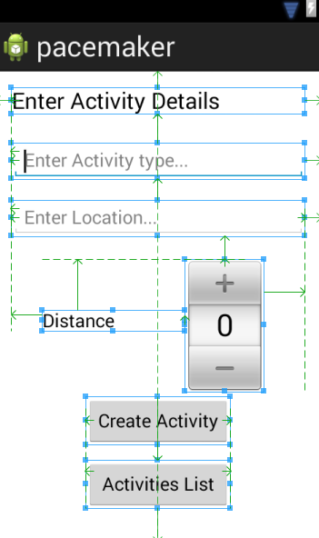
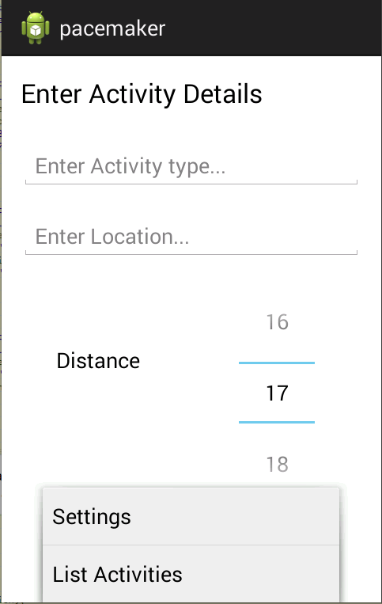

Extend the pacemaker-android app to enable activities to be listed. Explore three patterns in this context: memento, singleton, adapter
This is v1 of the pacemaker-android project from the last lab:
You can import this for reference purposes, or keep working with your own version.
Currently, your createActitivyButtonPressed method in the CreateActivity class looks like this:
public void createActivityButtonPressed (View view)
{
double distance = distancePicker.getValue();
Activity activity = new Activity (activityType.getText().toString(), activityLocation.getText().toString(), distance);
activities.add(activity);
Log.v("Pacemaker", "CreateActivity Button Pressed with " + distance);
}We are creating an activity, and adding it to a list held locally. If the user would like to see the activities, this handler will switch views:
public void listActivityButtonPressed (View view)
{
Log.v("Pacemaker", "List Activityies Button Pressed");
Intent intent = new Intent(this, ActivitiesList.class);
startActivity (intent);
}However, the activity is not able to access the list we have been updating with new activities.
This is the current Activity class:
public class Activity
{
public Long id;
public String type;
public String location;
public double distance;
public Activity()
{
}
public Activity(String type, String location, double distance)
{
this.type = type;
this.location = location;
this.distance = distance;
}
@Override
public String toString()
{
return toStringHelper(this).addValue(id)
.addValue(type)
.addValue(location)
.addValue(distance)
.toString();
}
@Override
public boolean equals(final Object obj)
{
if (obj instanceof Activity)
{
final Activity other = (Activity) obj;
return Objects.equal(type, other.type)
&& Objects.equal(location, other.location)
&& Objects.equal(distance, other.distance);
}
else
{
return false;
}
}
@Override
public int hashCode()
{
return Objects.hashCode(this.id, this.type, this.location, this.distance);
}
}Augment this class with the following features (as members of the class):
public Activity(Parcel in)
{
this.type = in.readString();
this.location = in.readString();
this.distance = in.readDouble();
}
@Override
public int describeContents()
{
return 0;
}
@Override
public void writeToParcel(Parcel dest, int flags)
{
dest.writeString(type);
dest.writeString(location);
dest.writeDouble(distance);
}
public static final Parcelable.Creator<Activity> CREATOR = new Parcelable.Creator<Activity>()
{
public Activity createFromParcel(Parcel in)
{
return new Activity(in);
}
public Activity[] newArray(int size)
{
return new Activity[size];
}
};This will enable instances of the class to be 'parcelabe' - i.e. externalized to an external to another object.
We can transfer such a 'parcel' to another activity by adding it to a 'bundle' for that activity, and adding it as an 'extra' for the activity to pick up:
public void listActivityButtonPressed (View view)
{
Log.v("Pacemaker", "List Activityies Button Pressed");
Intent intent = new Intent(this, ActivitiesList.class);
Bundle bundle = new Bundle();
bundle.putParcelableArrayList("activities", activities);
intent.putExtras(bundle);
startActivity (intent);
}In the ActivitiesList class, we can recover the list from the bundle. This can be done in onCreate:
Bundle extras = getIntent().getExtras();
List<Activity> activities = extras.getParcelableArrayList("activities");We might display the activity list to the log:
for (Activity activity : activities)
{
Log.v("Pacemaker", "Activity: " + activity);
}We would expect this to use the toString helper we have provided to Activity model:
@Override
public String toString()
{
return toStringHelper(this).addValue(type).addValue(location).addValue(distance).toString();
}Just sending the list to the log will not suffice. We should attempt to render them to the list view directly.
Make sure we have the activitiesListView to hand:
public class ActivitiesList extends android.app.Activity
{
private ListView activitiesListView;
@Override
protected void onCreate(Bundle savedInstanceState)
{
super.onCreate(savedInstanceState);
setContentView(R.layout.activities_list);
activitiesListView = (ListView) findViewById(R.id.activitiesListView);
Bundle extras = getIntent().getExtras();
List<Activity> activities = extras.getParcelableArrayList("activities");
..
}The simplest way of rendering to this list view is to use an off-the-shelf adapter:
ArrayAdapter <Activity>activitiesAdapter = new ArrayAdapter<Activity>(this, android.R.layout.simple_list_item_1, activities);
activitiesListView.setAdapter(activitiesAdapter);
activitiesAdapter.notifyDataSetChanged();This should display the items as expected. However, they will be still formatted using the toString formatter. Also, is is using 'simple_list_item_1' layout - explained here:
We can introduce an Application object, guaranteed to be a singleton - and accessible to all activities in our application.
Create a new package called 'org.pacemaker.main' - and introduce this class:
package org.pacemaker.main;
import java.util.ArrayList;
import java.util.List;
import org.pacemaker.models.Activity;
import android.app.Application;
import android.util.Log;
public class PacemakerApp extends Application
{
public List<Activity> actvities = new ArrayList<Activity>();
@Override
public void onCreate()
{
super.onCreate();
Log.v("Pacemaker", "Pacemaker App Started");
}
}If an application object is to be created, it must be specified in the manifest AndroidManifst.xml
<application
android:name="org.pacemaker.main.PacemakerApp"Run the app now and make sure the log message appears (once only)
CreateActivity can now reach for this object when it is created:
public class CreateActivity extends android.app.Activity
{
private PacemakerApp app;
@Override
protected void onCreate(Bundle savedInstanceState)
{
//...
app = (PacemakerApp) getApplication()
//...
}.. and we can simplify cresteActivityButton pressed, removing the parcelable mechanism, and simply adding the activity to the list in the application object:
public void createActivityButtonPressed (View view)
{
double distance = distancePicker.getValue();
Activity activity = new Activity (activityType.getText().toString(), activityLocation.getText().toString(), distance);
app.actvities.add(activity);
}ActivitiesList can also be simplified, we just retrieve the application object and the list of activities from that:
public class ActivitiesList extends android.app.Activity
{
private PacemakerApp app;
private ListView activitiesListView;
@Override
protected void onCreate(Bundle savedInstanceState)
{
super.onCreate(savedInstanceState);
setContentView(R.layout.activities_list);
app = (PacemakerApp) getApplication();
activitiesListView = (ListView) findViewById(R.id.activitiesListView);
List<Activity> activities = app.actvities;
ArrayAdapter <Activity>activitiesAdapter = new ArrayAdapter<Activity>(this, android.R.layout.simple_list_item_1, activities);
activitiesListView.setAdapter(activitiesAdapter);
activitiesAdapter.notifyDataSetChanged();
}
@Override
public boolean onCreateOptionsMenu(Menu menu)
{
getMenuInflater().inflate(R.menu.activities_list, menu);
return true;
}
}This should now work as before. We can also remove the Parcelable methods from the Activity model as we are no longer using them.
The existing adapter we are using in the ActivitiesList class is a stock adapter from the SDK:
We can write our own custom adapter to do the same job:
class ActivityAdapter extends ArrayAdapter<Activity>
{
private Context context;
public List<Activity> activities;
public ActivityAdapter(Context context, List<Activity> activities)
{
super(context, android.R.layout.simple_list_item_1, activities);
this.context = context;
this.activities = activities;
}
@Override
public View getView(int position, View convertView, ViewGroup parent)
{
LayoutInflater inflater = (LayoutInflater) context.getSystemService(Context.LAYOUT_INFLATER_SERVICE);
View view = inflater.inflate(android.R.layout.simple_list_item_1, parent, false);
Activity activity = activities.get(position);
TextView textView = (TextView) view.findViewById(android.R.id.text1);
textView.setText("" + activity);
return view;
}
@Override
public int getCount()
{
return activities.size();
}
}In the above, we have precise control over how we layout the activity data in each row. We are not using this yet, so our display is still primitive.
Using this adapter in ActivitiesList.onCreate instead of the library one is straightforward :
ActivityAdapter activitiesAdapter = new ActivityAdapter(this, activities);
activitiesListView.setAdapter(activitiesAdapter);
activitiesAdapter.notifyDataSetChanged();This should now work as expected.
In the last lab, you inserted a new button onto the activities view to allow navigation to the list view:

Remove this button now, and introduce a standard menu item to move between views:

Wire up this menu such that it will trigger the view as expected.
We are still using the stock simple_list_item_1 layout:
Experiment with designing a new layout, which is to be loaded instead of the above layout. This one should have three text fields (instead of 1 above) and you can use these to display the type, location and distance attributes of each activity.
HINT:
This would be a reasonable activity_row_layout.xml:
<?xml version="1.0" encoding="utf-8"?>
<RelativeLayout xmlns:android="http://schemas.android.com/apk/res/android"
android:layout_width="match_parent"
android:layout_height="match_parent" >
<TextView
android:id="@+id/type"
android:layout_width="wrap_content"
android:layout_height="wrap_content"
android:layout_alignParentLeft="true"
android:layout_alignParentTop="true"
android:layout_marginLeft="30dp"
android:layout_marginTop="27dp"
android:text="" />
<TextView
android:id="@+id/distance"
android:layout_width="wrap_content"
android:layout_height="wrap_content"
android:layout_alignBaseline="@+id/type"
android:layout_alignBottom="@+id/type"
android:layout_alignParentRight="true"
android:layout_marginRight="40dp"
android:text="" />
<TextView
android:id="@+id/location"
android:layout_width="wrap_content"
android:layout_height="wrap_content"
android:layout_alignBaseline="@+id/distance"
android:layout_alignBottom="@+id/distance"
android:layout_centerHorizontal="true"
android:text="" />
</RelativeLayout>Place this in the `res\layout' folder - and use it instead of 'simple_list_item_1' when initialising the adapter. You will then need to load the controls directly from the adapter. something like this:
TextView type = (TextView) view.findViewById(R.id.type);
TextView location = (TextView) view.findViewById(R.id.location);
TextView distance = (TextView) view.findViewById(R.id.distance);
type.setText(activity.type);
location.setText(activity.location);
distance.setText("" + activity.distance);This is version 2 of the pacemaker-android app (including solutions to the above exercises):